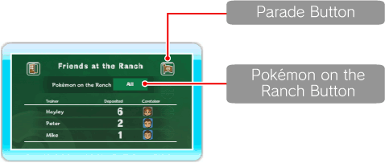
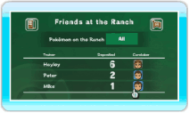
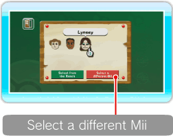
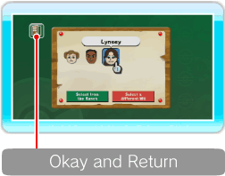
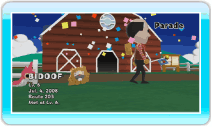

18 |
Deposit Details |
 |
Here you can check Pokémon on the Ranch, see Mii info and view the Pokémon Parade. You can also change the selection of Pokémon you want to bring to the Ranch by pointing at the POKéMON ON THE RANCH button and pressing  ● What is a Pokémon Caretaker? A Pokémon Caretaker is a Mii who takes care of Pokémon brought to the Ranch by a Trainer. The Pokémon on the ranch will be extra friendly with the Mii who has been assigned as their Caretaker. 
● Change the Caretaker of Pokémon On the Deposit Details Screen, point at the Mii you want to change and press Select a Mii Already on the Ranch as a Caretaker When the Caretaker Setup Screen is displayed, point at the Mii that you want to change and press Note: A Mii that has a
Select a Mii as a Caretaker Who Is Not on the Ranch


If you want to select a different Mii that you have on the Caretaker Setup Screen, point at SELECT A DIFFERENT Mii and press Note: You cannot choose SELECT A DIFFERENT Mii if you have the maximum number of Miis on the Ranch. Once setup is complete, point at OKAY AND RETURN and press Note: You cannot change the Caretaker status for Hayley. If You Want to Erase a Mii When you erase a Mii on the Mii Channel, that Mii will disappear from the Ranch, and a new Mii will be automatically assigned as a Caretaker. ● Add a Pokémon to Favorites This feature becomes available when you bring a certain number of Pokémon to the Ranch. Once you add Pokémon to Favorites, you have the option of bringing only those Pokémon to the Ranch. To add to Favorites, point at

● Parade Point at the Parade button and press |
 . You can change the selection to choose one of the trainers, ALL or FAVORITES.
. You can change the selection to choose one of the trainers, ALL or FAVORITES. below its face is a Mii who is already assigned as a Caretaker on the Ranch.
below its face is a Mii who is already assigned as a Caretaker on the Ranch. next to the Pokémon Name and press
next to the Pokémon Name and press  when you want to exit the Parade.
when you want to exit the Parade. |
 |
 |